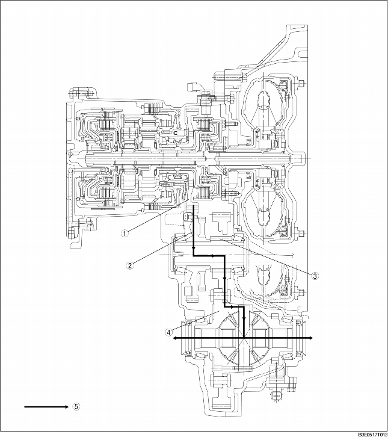

Output gear outline • The two-step final drive mechanism is adopted by arranging the secondary gear and the output gear on the output gear shaft to miniaturize the transaxle. 1 Primary gear 2 Secondary gear 3 Output gear 4 Differential 5 Power flow